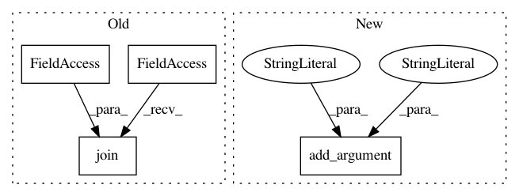

caf3b04b27c0654af3594f0f5ad956f368229c8f,dashboard/agent.py,,,#,177
Before Change
if args.log_dir:
log_dir = args.log_dir
else:
log_dir = os.path.join(temp_dir, "session_latest/logs")
os.makedirs(log_dir, exist_ok=True)
if args.logging_filename:
logging_handlers = [
After Change
required=True,
type=int,
help="The port to expose metrics through Prometheus.")
parser.add_argument(
"--dashboard-agent-port",
required=True,
type=int,
help="The port on which the dashboard agent will receive GRPCs.")
parser.add_argument(
"--node-manager-port",
required=True,
type=int,
In pattern: SUPERPATTERN
Frequency: 4
Non-data size: 4
Instances
Project Name: ray-project/ray
Commit Name: caf3b04b27c0654af3594f0f5ad956f368229c8f
Time: 2020-10-23
Author: maxfitton@anyscale.com
File Name: dashboard/agent.py
Class Name:
Method Name:
Project Name: asyml/texar
Commit Name: 36ce15cd6b8d07cb87e4e416b304d052c343adb5
Time: 2018-06-24
Author: shore@pku.edu.cn
File Name: examples/transformer/hyperparams.py
Class Name:
Method Name: load_hyperparams
Project Name: asyml/texar
Commit Name: 562c323823c1cde522f57b0ebb8496f561e949c7
Time: 2018-04-09
Author: shore@pku.edu.cn
File Name: examples/transformer/hyperparams.py
Class Name:
Method Name:
Project Name: asyml/texar
Commit Name: 4a327c9e769bc99adc87c9464374523de89fec6c
Time: 2018-08-08
Author: shore@pku.edu.cn
File Name: examples/transformer/hyperparams.py
Class Name:
Method Name: load_hyperparams